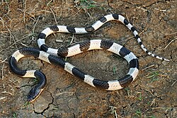

.jpg)

.jpg)
.jpg)
งูทับสมิงคลา/งูทับทางขาว (Malayan Krait)
ชื่อวิทยาศาสตร์: Bungarus Candidus
ลักษณะทั่วไป
งูทับสมิงคลาจัดเป็นงูขนาดกลางที่มีความเรียวยาว โครงสร้างลำตัวมีความเป็นเอกลักษณ์ทางสรีรวิทยา โดยลำตัวไม่ได้เป็นรูปทรงกลมทรงกระบอกเหมือนงูทั่วไป แต่มีหน้าตัดลำตัวเป็นรูปสามเหลี่ยมโคนป้าน ซึ่งเกิดจากกระดูกสันหลังที่ยกตัวสูงขึ้นเป็นสันตลอดแนวหลัง ยาวตั้งแต่บริเวณคอเรื่อยไปจนถึงโคนหาง โดยเฉลี่ยเมื่อโตเต็มที่จะมีความยาวประมาณ 100–120 เซนติเมตร แต่อาจพบตัวที่มีขนาดใหญ่เป็นพิเศษยาวได้ถึง 160 เซนติเมตร ช่วงที่กว้างที่สุดของลำตัวมักจะโตไม่เกินนิ้วโป้งถึงนิ้วชี้ของมนุษย์ผู้ใหญ่ ทำให้ดูเป็นงูที่ทรงยาวและปราดเปรียว หางมีลักษณะเรียวยาวและค่อยๆ ตีบแคบลงจนถึงปลายหางซึ่งเป็นปลายแหลม ต่างจากงูสามเหลี่ยม (Bungarus fasciatus) ที่มีปลายหางมนกุดอย่างชัดเจน ลำตัวมีแถบสีดำเข้มหรือดำอมน้ำเงิน สลับกับแถบสีขาวหรือขาวครีม โดยมี ปล้องสีดำประมาณ 20–50 ปล้อง ขึ้นอยู่กับขนาดและช่วงอายุ ปล้องสีดำจะมีขนาดความกว้างมากกว่าปล้องสีขาวอย่างเห็นได้ชัด (สัดส่วนประมาณ 2:1 หรือ 3:1) ปล้องสีดำของงูทับสมิงคลาจะ พาดผ่านด้านข้างโอบลงไปจรดถึงท้อง หรือเกือบจรดท้องทั้งหมด ต่างจากงูพิษชนิดอื่นหรืองูไม่มีพิษบางชนิดที่ปล้องจะขาดช่วงบริเวณข้างลำตัว ท้องมีสีขาวนวล ขาวครีม หรือสีกระดองไข่ เรียบสม่ำเสมอไม่มีจุดหรือลายแต้มใดๆ เกล็ดใต้ท้องมีความกว้าง แข็งแรง และขึงขยายตลอดความกว้างของท้องเพื่อช่วยในการเลื้อย เกล็ดตามลำตัวมีความเรียบมันวาว (Smooth scales) สะท้อนแสงได้ดี เกล็ดบนสันหลังแถวกลางสุด (Vertebral scales) จะมีขนาดใหญ่กว่าเกล็ดบริเวณข้างลำตัวอย่างชัดเจน และมีรูปทรงคล้ายหกเหลี่ยมขยายกว้าง ด้านบนของหัวเป็นสีดำสนิทหรือดำน้ำเงินเข้มข้น รอยต่อระหว่างหัวด้านบนกับกรามล่างตัดกันชัดเจน โดยริมฝีปากและคางล่างเป็นสีขาวครีม ดวงตามีขนาดเล็กและเป็นสีดำสนิทแทบแยกม่านตากับรูรับแสงไม่ออก (Dark iris) ให้ความรู้สึกมืดมิดสะท้อนถึงวิวัฒนาการในการหากินกลางคืนอย่างเต็มรูปแบบ งูทับสมิงคลากินงูสายพันธุ์อื่น (Ophiophagous) เป็นอาหารหลัก รวมถึงสัตวตัวเล็กอย่างกิ้งก่าก็เช่นกัน
ถิ่นอาศัย พิษ และความอันตราย
- ถิ่นอาศัย: งูทับสมิงคลาจัดเป็นงูประจำถิ่นของภูมิภาคเอเชียตะวันออกเฉียงใต้ มีขอบเขตการกระจายพันธุ์ตั้งแต่ระดับความสูงน้ำทะเลไปจนถึงพื้นที่สูงประมาณ 1,200 เมตรเหนือระดับน้ำทะเล พบได้ในหลายประเทศ อาทิ ไทย, ลาว, กัมพูชา, เวียดนาม, มาเลเซีย (ฝั่งคาบสมุทร) และอินโดนีเซีย (เกาะสุมาตรา, ชวา, บาหลี) งูทับสมิงคลาสามารถพบได้ทั่วทุกภาคของประเทศไทย แต่ความหนาแน่นของประชากรจะค่อนข้างสูงเป็นพิเศษใน ภาคตะวันออกเฉียงเหนือ ภาคตะวันออก และภาคใต้ งูทับสมิงคลาเป็นงูที่ต้องการความชื้นสูง ถิ่นอาศัยตามธรรมชาติและสภาพแวดล้อมที่มักพบ ได้แก่ ป่าธรรมชาติ ใกล้แหล่งน้ำ พื้นที่เกษตรกรรมและชุมชน
- พิษ:พิษออกฤทธิ์ทำลายระบบประสาทอย่างรุนแรง(Neurotoxic) พิษจะตรงเข้าขัดขวางการทำงานของระบบประสาทส่วนปลายและจุดเชื่อมต่อระหว่างประสาทกับกล้ามเนื้อ (Neuromuscular junction) ทำให้สัญญาณประสาทไม่สามารถสั่งการไปยังกล้ามเนื้อได้ อาการแรกที่สังเกตุได้ชัดเจนจะเริ่มขึ้น 3 ชั่วโมงหลังถูกกัด โดยจะมีอาการง่วงซึม อ่อนเพลีย ตาปรือ ลืมตาไม่ขึ้น (Ptosis) เห็นภาพซ้อน น้ำลายไหล ย้อย กลืนน้ำลายหรืออาหารลำบาก พูดไม่ชัด เสียงอ้อแอ้ คอตกยกหัวไม่ขึ้น หากปล่อยไว้ไม่รักษา อาการจะยิ่งร้ายแรง อัมพาตลามลงสู่กล้ามเนื้อแขนและขา กล้ามเนื้อกะบังลมและกล้ามเนื้อยึดซี่โครงหยุดทำงาน หากไม่ได้รับเครื่องช่วยหายใจและเซรุ่มแก้พิษงูทันเวลา ผู้ถูกกัดจะตายจากการขาดอากาศหายใจ ความน่ากลัวคือ ผู้ถูกกัดจะแทบไม่รู้สึกเจ็บแผล ทำให้บางครั้งจึงไม่รู้ตัวด้วยซ้ำว่าถูกกัด รู้ตัวอีกทีก็ตอนลงไปนอนเฝ้ารากมะม่วงเรียบร้อยแล้ว พิษของงูทับสมิงคลาคล้ายกับงูสามเหลี่ยม แต่ความรุนแรงนำหน้างูสามเหลี่ยมไปไกลหลายหมื่นโยชน์
- ระดับความอันตราย: โคตรอันตราย ☠☠☠☠☠: พิษแรงกว่างูเห่าหลายสิบเท่า มักเลื้อยเข้าไปกัดคนที่กำลังนอนอยู่บ่อยครั้ง และเพราะกัดไม่เจ็บ ผู้ถูกกัดมักจะไม่รู้ตัวและนอนไหลตายไปแบบดื้อๆเลย นิสัยก้าวร้าวกว่างูสามเหลี่ยมอย่างเห็นได้ชัด หากถูกกัด โอกาสและอัตรารอดชีวิตมีไม่ถึง 50% ด้วยซ้ำ ซึ่งนั่นคือในกรณีของคนที่รับเซรุ่มไปแล้วด้วย
Fun Fact
- สองขั้ว สองบุคลิก ภาค 2: คล้ายงูสามเหลี่ยม ในเวลากลางวัน งูทับสมิงคลาจะขี้อาย ไม่ก้าวร้าว มักนอนขดตัวเอาหัวซุกไว้ใต้ลำตัว หากถูกรบกวนมักเลือกที่จะเลื้อยหนีหรือขดตัวแน่น จะพยายามไม่กัด ผิดกับในเวลากลางคืนที่พวกมันจะตื่นตัวสูง ฉับไว ก้าวร้าว และพร้อมกัดทันทีโดยไม่ลังเล นี่คือสิ่งที่เป็น Signature ของกลุ่มงูทับทาง
- งูที่พิษร้ายแรงที่สุดในประเทศ: ค่า LD50 (Median Lethal Dose) ของงูทับสมิงคลาในหนูทดลองมีตัวเลข ประมาณ 0.1-0.2 mg/kg มันจึงกลายเป็นงูที่มีพิษร้ายแรงที่สุดไทย และแรงเป็นอันดับ 8 ของโลก
- โหดจนโดนก็อป: ลายปล้องขาวดำอย่างเด่นชัด ด้วยความที่มีพิษร้ายแรง จึงมักมีงูไม่มีพิษ เช่น งูปล้องฉนวน เลียนแบบลายเพื่อให้รอดจากผู้ล่า
ภาคพิเศษ: วิธีสังเกตุระหว่างงูทับสมิงคลา(ตัวโหดตัวตึงตัวอันตราย)กับงูปล้องฉนวน(น่ารักไร้พิษภัย)
1. สันหลังและรูปทรงลำตัว
- พี่ทับ: แนวสันหลังยกสูงขึ้นเป็นรูปสามเหลี่ยมหรือสันกูบชัดเจนตลอดลำตัว ไม่ได้กลมมน
- น้องปล้อง: ลำตัวกลม มน เหมือนงูทั่วไป ไม่มีสันหลังสูงขึ้นมา
2. เกล็ดแนวสันหลัง
- พี่ทับ: เกล็ดบริเวณแนวกลางสันหลังจะมีขนาดใหญ่กว่าเกล็ดด้านข้างอย่างเห็นได้ชัด และเป็นรูปหกเหลี่ยม
- น้องปล้อง: เกล็ดตามลำตัวมีขนาดใกล้เคียงกันเรียงสม่ำเสมอ
3. ลวดลายและปล้องสี
- พี่ทับ: มีลายปล้องดำสลับขาว (หรือเหลืองอ่อน) ชัดเจน โดยปล้องสีดำจะล้อมรอบพันไปจนถึงท้องด้านล่าง (ใต้ท้องเป็นสีขาวสลับดำ)
- น้องปล้อง: ลายปล้องมักไม่โอบรอบถึงใต้ท้อง โดยบริเวณใต้ท้องจะเป็นสีขาวเรียบไม่มีลาย และปล้องมักมีแต้มลายแตกหรือสีเหลือง/น้ำตาลผสม ไม่ใช่สีขาวสะอาดตา